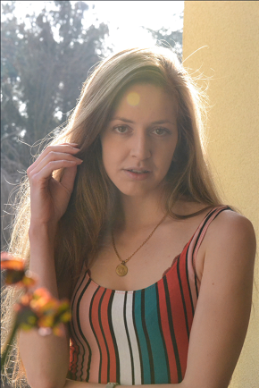

|  |
Eliana Muccignato
Allevatrice di Maine Coon
Contatti
Le mie competenze
Presentazione
Sono una ragazza di 23 anni, laureata in Scienze dell'Ambiente e della natura.
Attualmenste lavoro come coallevatrice nell'Allevamento amatoriale Maine Coon dell'Antica Luna.
Ho conoscenza nella vendita, nel marketing e digital marketing, attraverso l'uso di piattaforme business.
Parlo correttamente la lingua Inglese e Spagnola, e ho basi di lingua tedesca e russa.
Sono munita di patente B. |
Istruzione
Laurea in Scienze dell'Ambiente e della Natura
Università degli Studi dell'Insubria, Varese (Italia)
- Chimica Inorganica, Organica, Analitica, Ambientale e Analitica Applicata
- Biologia vegetale e animale
- Matematica e Fisica
- Sistemi GIS e Biogeografia
- Botanica, Botanica Ambientale, Zoologia, Paleontologia e Etologia
- Geologia, Litologia, Geochimica dei materiali
- Ecologia, Ecologia applicata
- Storia della Montagna, Comunicazione della Scienza e Comunicazione Ambientale
Diploma Linguistico
- Liceo Linguistico Galileo Galilei, Legnano (Italia)
- Lingua Inglese e Spagnola B1
- Lingua Tedesca A2
- Regolare programma di Liceo
Esperienza professionale
01/01/2011–data attuale Coallevatrice
Allevamento Amatoriale Maine Coon dell'Antica Luna, Legnano (Italia)
- vendita di animali di razza
- cura e gestione degli animali e dell'area di allevamento
- redazione e gestione di documenti sanitari, genetici, commerciali
- Attività di Marketing e Digital marketing attraverso le piattaforme Facebook Business, Google Business e Instagram
- Gestione sito internet su piattaforma Wordpress
- Referenze Facebook - Referenze Google
05/05/2018–25/11/2018 Tirocinio in Università degli Studi dell'Insubria
Università degli Studi dell'Insubria, Como (Italia)
- Analisi complessiva dell'area territoriale del Messico e del Guatemala, tramite l'utilizzo della lingua spagnola
- Reperimento e elaborazione di dati sismici ambientali attraverso fonti digitali e interazioni utilizzando la lingua spagnola
- Redazione Mappe di Intensità
- Redazione Isosisme
- Utilizzo dei programmi Excel, My Maps, Google Earth
- Stima degli effetti sismici sull'ambiente e della propagazione delle onde sismiche
01/10/2018–01/11/2018 Promoter
Sintesi Promotions, Milano (Italia)
- Attività di Marketing di prodotti petfood
- interazione con potenziale clientela
- attività di promozione
08/06/2017–08/07/2017 Animatrice e Educatrice Ambientale
B&B Bosco Tenso, Premosello Chiovenda (Italia)
- educazione ambientale nell'area protetta Parco Nazionale Valgrande
- Attività Ippiche educative
21/08/2016–02/09/2016 Mantenimento attività Allevatoriale
Allevamento amatoriale Millennium, Olgiate Olona (Italia)
- Cura degli esemplari
- Pulizia degli spazi
01/01/2011–01/01/2012 Affiancamento Giudici di Gara
ANFI (Italia)
gestione dei gatti in gara pulizia dei ring di gara traduzione giudizi dei giudici, documenti di gara coordinazione lavori